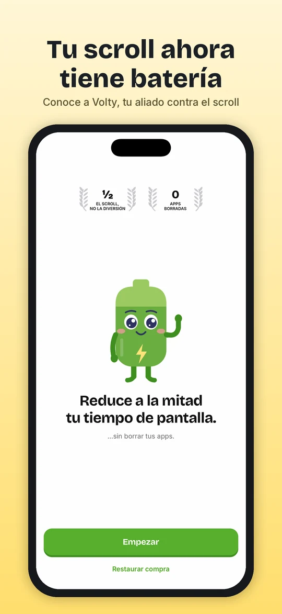

Adicción al móvil y a las redes sociales: qué hacer
¿Miras el móvil sin pensar, se te van las noches en el feed o te inquietas si no lo tienes cerca? No es falta de carácter: muchas apps están diseñadas para retenerte el mayor tiempo posible. La buena noticia es que pequeños cambios en tu día a día suelen ayudar más que la culpa.
Señales de alarma
- El móvil es lo primero que miras al despertar y lo último antes de dormir.
- «Solo un momento» se convierte a menudo en una hora.
- Has intentado usarlo menos y has vuelto enseguida a lo de siempre.
Qué ayuda
- Observa cuándo y dónde haces más scroll.
- Ponte obstáculos: quita las apps tentadoras de la pantalla de inicio y desactiva las notificaciones que no necesitas.
- Dale un presupuesto fijo a las apps que te enganchan, en vez de confiar en la fuerza de voluntad.
- Llena ese hueco con algo que disfrutes lejos de la pantalla.
- Habla con alguien. Si el móvil afecta a tu sueño, tu trabajo o tus relaciones, un profesional sanitario puede ayudarte.
Cómo te ayuda ScrollVolt
ScrollVolt da a las apps que elijas una batería de scroll compartida. Se gasta mientras las usas y se recarga sola durante el día: un límite claro, sin prohibiciones totales. Para desbloquear, arrastras la batería hasta los minutos que quieres, y a cero aparece una pantalla tranquila en lugar de la app. Volty, tu pequeña batería amiga, se encarga de que todo sea un empujoncito amable y no un sermón.


Preguntas frecuentes
¿ScrollVolt es un tratamiento para la adicción?
No. Es una herramienta de autoayuda que hace más fácil respetar tus límites. Si sientes que has perdido el control, busca ayuda profesional.
¿Tengo que dejar las redes sociales?
No. Tú decides qué apps tienen batería y cuántos minutos desbloqueas.
¿Qué pasa con mis datos?
Se quedan en tu iPhone. ScrollVolt usa los frameworks de Tiempo de uso de Apple y no tiene cuenta, rastreo ni anuncios.
Prueba ScrollVolt en tu iPhone
ScrollVolt Premium es una suscripción anual con 3 días de prueba gratis que puedes cancelar cuando quieras en los ajustes de tu cuenta de Apple. ¿Prefieres pagar una sola vez? También hay un desbloqueo vitalicio.
Descárgalo en elApp Store